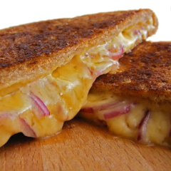

Grilled Cheese

Possibly the World's Best Grilled Chesse recipie!
Ingredients
- 2 pieces sourdough bread
- 1 ½ tablespoons unsalted butter
- 1 ½ tablespoons mayonnaise
- 3 slices cheddar cheese
Steps
- On a cutting board, butter each piece of bread with butter on one side.
- Flip the bread over and spread each piece of bread with mayonnaise.
- Place the cheese on the buttered side of one piece of bread. Top it with the second piece of bread, mayonnaise side out.
- Heat a nonstick pan over medium low heat. a nonstick pan over medium low heat.
- Place the sandwich on the pan, mayonnaise side down. the sandwich on the pan, mayonnaise side down.
- Cook for 3-4 minutes, until golden brown.Cook for 3-4 minutes, until golden brown.
- Using a spatula, flip the sandwich over and continue cooking until golden brown, about 2-3 minutes.
- Enjoy!